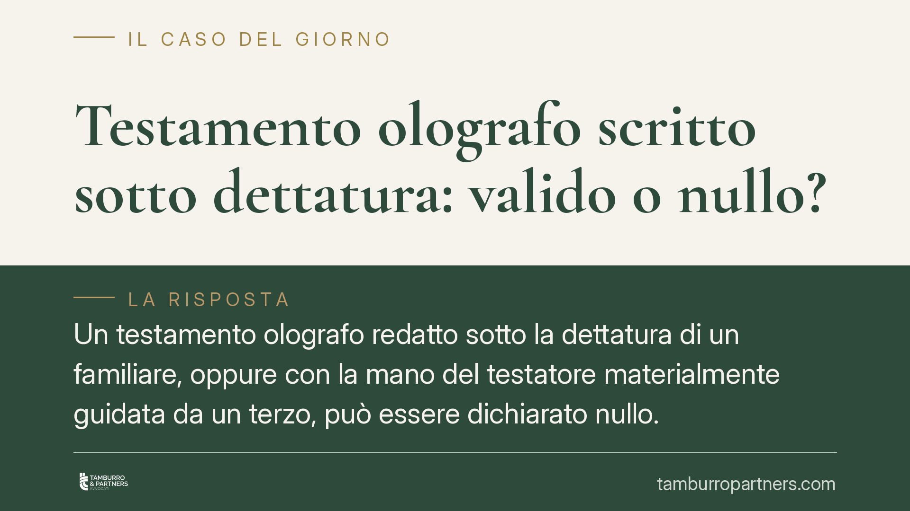

Testamento olografo scritto sotto dettatura: valido o nullo?
Un testamento olografo redatto sotto la dettatura di un familiare, oppure con la mano del testatore materialmente guidata da un terzo, può essere dichiarato nullo. La ragione sta nel requisito dell'autografia previsto dall'articolo 602 del Codice civile. Analizziamo quando la volontà del defunto resta valida e quando l'intervento altrui compromette l'intera scheda testamentaria.

Il fatto: quando la mano non è del testatore
Capita di frequente. Una persona anziana o malata detta le proprie ultime volontà a un figlio, che le trascrive; oppure il testatore firma un foglio che la mano di un terzo ha materialmente aiutato a compilare. In entrambi i casi il documento assomiglia a un testamento, ma la sua tenuta giuridica è tutt'altro che scontata.
La distinzione è netta. Un conto è suggerire al testatore come esprimersi; altro è scrivere al posto suo o guidarne la mano. Nel primo caso il testamento può reggere; nel secondo, quasi sempre no.
Inquadramento normativo
Il testamento olografo è disciplinato dall'articolo 602 del Codice civile, che impone tre requisiti congiunti: deve essere *scritto per intero, datato e sottoscritto di mano del testatore*. L'autografia — cioè il fatto che la scrittura provenga fisicamente dalla mano di chi dispone — non è un formalismo. È la garanzia stessa che le disposizioni riflettano una volontà personale, spontanea e attuale.
Quando questa garanzia manca, entra in gioco l'articolo 606 c.c., secondo cui il difetto di autografia o di sottoscrizione comporta la nullità del testamento. Si tratta della sanzione più radicale: il testamento è come se non fosse mai esistito, e la successione si apre secondo le regole della legge (successione legittima).
Questione diversa, ma collegata, è quella dei vizi della volontà. L'articolo 624 c.c. prevede l'annullabilità del testamento quando le disposizioni sono frutto di violenza, dolo o errore. Qui il documento è formalmente valido, ma la volontà del testatore è stata piegata o ingannata: chi ha interesse deve agire in giudizio per farlo annullare.
La giurisprudenza — la Cassazione, Sez. II, insieme a diversi tribunali di merito (Napoli, Torino, Frosinone) — ha tracciato con chiarezza il confine. La mano guidata rende il testamento nullo, perché il gesto scrittorio non è espressione autonoma del testatore. La semplice dettatura, invece, non incide sull'autografia se il testatore scrive di suo pugno: ciò che conta è che la grafia sia sua, non chi abbia suggerito le parole.
Le implicazioni pratiche
Per chi eredita — o per chi si vede escluso — la differenza tra nullità e annullabilità è decisiva.
La nullità per difetto di autografia può essere fatta valere da chiunque vi abbia interesse, senza termini di prescrizione stringenti come per l'annullamento, e travolge l'intero atto. Se dimostrata, la scheda testamentaria perde effetto e subentrano gli eredi legittimi.
L'annullabilità per vizi della volontà (art. 624) segue invece regole più rigorose: l'azione va proposta entro cinque anni dal giorno in cui si è avuta notizia della violenza, del dolo o dell'errore.
Sul piano probatorio, molto si gioca sulla perizia grafologica. Verificare se una firma o un testo siano stati eseguiti autonomamente, con mano guidata o addirittura falsificati, richiede una consulenza tecnica accurata. Nei giudizi ereditari è spesso l'elemento che orienta la decisione.
Cosa fare in concreto
- Conservate l'originale del testamento e non alteratelo: ogni intervento successivo può comprometterne la genuinità e la valutazione peritale.
- Verificate la grafia con un consulente grafologico se sospettate mano guidata, dettatura trascritta da altri o falsificazione.
- Distinguete i rimedi: se manca l'autografia agite per la nullità; se sospettate coercizione o inganno valutate l'azione di annullamento entro i cinque anni.
- Raccogliete gli elementi di contesto: condizioni di salute del testatore, presenza di terzi interessati, testimonianze sulle circostanze della redazione.
- Non improvvisate soluzioni transattive tra eredi prima di un'analisi giuridica: rinunce e accordi affrettati sono difficilmente reversibili.
Chi intende redigere un testamento e teme difficoltà fisiche nella scrittura può ricorrere al testamento pubblico, ricevuto dal notaio alla presenza di testimoni: una forma che elimina in radice i dubbi sull'autografia.
Ogni caso ha però caratteristiche proprie. La valutazione sulla validità o meno di una scheda testamentaria richiede l'esame concreto del documento e delle circostanze.
---
*Contributo informativo a cura di Tamburro & Partners - Avv. Giuseppe Tamburro. Non costituisce parere legale.*
Ogni famiglia ha il suo equilibrio.
Separazione, divorzio, affidamento, assegno: se vuoi un confronto riservato su una specifica situazione, scrivi allo studio. Ti rispondiamo entro un giorno lavorativo.